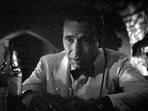
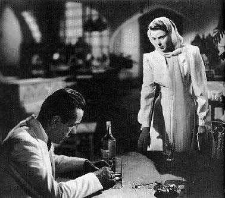
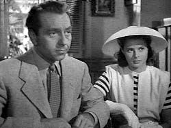
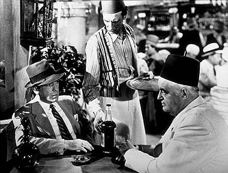
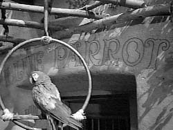
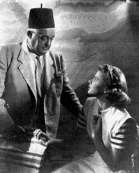

|

Texto de
Susana
Lopes de Alexandria

Título
foi tirado de "Casablanca" (5)
|

|
 Termina aqui o flashback. A cena volta para o presente. Rick está na mesa de seu bar, bêbado e atormentado.  Neste momento, Ilsa aparece no bar e tenta explicar por que não foi ao encontro dele na estação. Mas Rick está bêbado, revivendo o orgulho ferido de ter sido abandonado e a trata com rispidez. Ilsa vai embora.  No dia seguinte, Ilsa e Victor Laszlo vão depor na delegacia, diante do major alemão Strasser e o capitão Renault. O alemão faz uma proposta: um visto de saída para ele e Ilsa em troca dos nomes de todos os membros da resistência ao nazismo, nos diversos países invadidos pela Alemanha. Laszlo, obviamente, não aceita. Strasser então lhe diz que ele deverá ficar em Casablanca por um longo tempo, talvez para sempre. Ele revela também que Ugarte está morto.  O major alemão tem certeza de que que os salvo-condutos de Ugarte estão com Rick e ordena ao capitão Renault que faça uma revista no Rick's Café para encontrar os documentos. Ele teme que Victor Laszlo consiga fugir da Gestapo mais uma vez. Sabendo que a polícia quer revistar o bar, Rick sai e faz uma visita ao seu concorrente, o sr. Ferrari, que possui o bar Blue Parrot (Papagaio Azul). Além de dono de bar, Ferrari também faz comércio ilegal de vistos e tenta comprar os salvo-condutos de Rick. Mas Rick não confirma que os documentos estão com ele.  Quando Rick está saindo do Blue Parrot, encontra com Victor Laszlo entrando e diz: "O sr. Ferrari é aquele gordo sentado à mesa". Diz isso porque já sabe que Laszlo está ali para tentar comprar um visto de saída. Enquanto Laszlo conversa com Ferrari, Rick aproxima-se de Ilsa, que está do outro lado da rua, olhando alguns tecidos num camelô. Rick desculpa-se por seu comportamento da noite anterior. Ilsa ainda está chateada, mas conta a ele algo que ainda ninguém sabe: ela é casada com Victor Laszlo, já era casada com ele quando conheceu Rick em Paris. Diz isso e sai apressadamente ao encontro do marido no Blue Parrot.  Mas Ferrari tem más notícias: será impossível conseguir um visto de saída para Laszlo, pois a polícia está de olho no militante tcheco, para que desta vez ele não consiga fugir. Porém, Ferrari lhes dá uma informação preciosa na saída: com certeza, Rick tem os salvo-condutos de Ugarte, mas por alguma razão não quer vendê-los. |